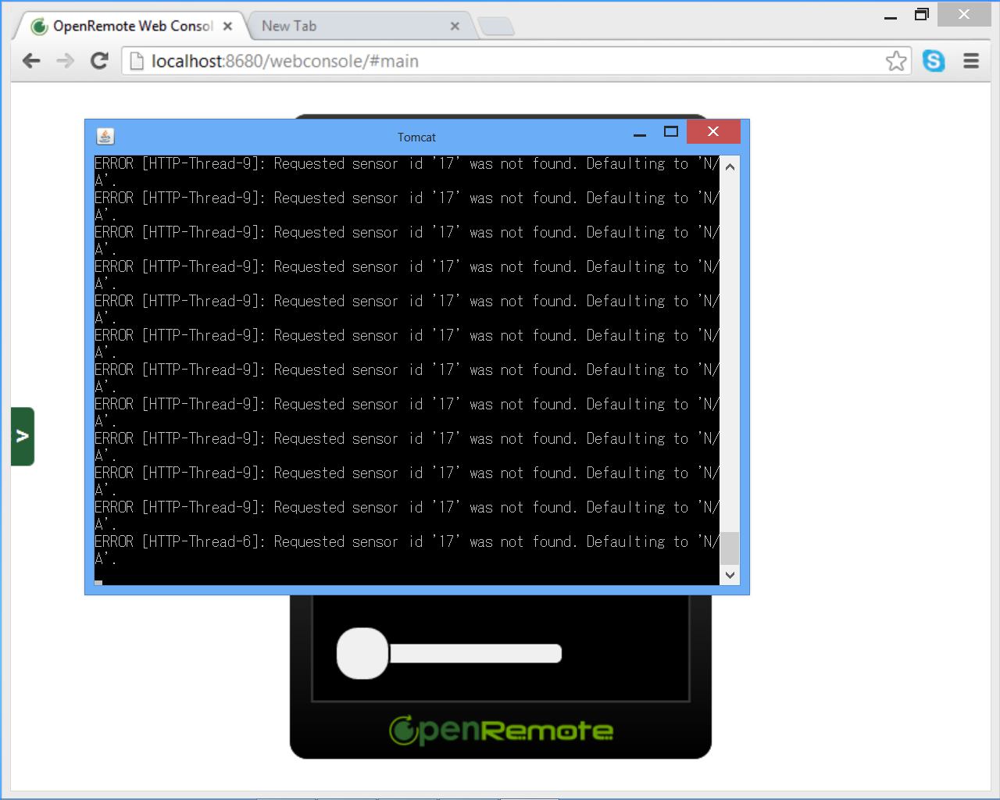

Dear Sir,
I am new to Openremote.
I installed the OpenRemote controller in the Window 8.
I have installed the Java in the directory c:\Program Files\Java\JRE6\bin
I have create the environment variable named JAVA_HOME in User and System variable. Which one should I use?
I put the above path in the variable.
After that I install the OpenRemote and run openremote run in CMD prompt.
However, it said the JAVA_HOME was not define or not correctly set.
What I did wrong?
Regards
{kind=link}
{kind=link}
|
OpenRemote does need to fix the install instruction on the OR website as this problem drove me a little nuts at first. However, none of us are perfect so here is the way I figured out how to do it. If you install OR from the OR website instructions there is an error in step 2 setting up the environment variable. According to OR you have to setup a Windows environment variable JAVA_HOME when it should be JRE_HOME. Here is a very basic install step-by-step. I would install OR on a 32 bit OS but if you plan to only use it to access OSA then 64 but will work fine. At this point you should have JDK and OR installed. On my machine JDK is install at "C:\Program Files\Java\jdk1.6.0_35" and OR is at "C:\OpenRemote-Controller-2.0.1". Here is where OR has some errors. Before starting OR you have to create an environment variable with the variable name JRE_HOME and point it to the JDK install directory but do not include spaces. It should look something like this. NAME: JRE_HOME For 64 bit OS use the vaule C:\Progra~2\Java\jdk1.6.0_35 YOU MUST REBOOTE YOUR COMPUTER AT THIS POINT! That is also NOT in the OR instructions which caused me some time troubleshooting. Now from the command prompt go to the OpenRemote bin directory "D:\OpenRemote-Controller-2.0.1\bin" and type "openremote start". That's it. |
|
JAVA_HOME is just fine. But the spaces might be the problem. Either System or User is ok. |
|
Here's what worked for me on Windows 8 32 bit:
Note: after setting environment variables you have to open a new command prompt window to get the new environment variable setting - the environment variable setting of existing command windows is not refreshed --> reboot is not required |
|
Hi Rainer, I have set the varible according to your suggest. The undefined variable message no longer appear. When I start the OR, I saw some message appear. When I tried to access it through http://localhost:8080/Controller, no response. Attached is the log of the appear message. It seems the server was not start successfully. ---------------------------------------------------------------------------------- at sun.reflect.NativeConstructorAccessorImpl.newInstance(NativeConstruct at org.apache.catalina.connector.Connector.initialize(Connector.java:105 at org.apache.catalina.core.StandardEngine.start(StandardEngine.java:443 at org.apache.catalina.core.StandardEngine.start(StandardEngine.java:443 at org.apache.catalina.core.StandardEngine.start(StandardEngine.java:443 at org.apache.catalina.core.StandardService.stop(StandardService.java:58 at org.apache.catalina.startup.Catalina.stop(Catalina.java:628) |
|
It seems that port 8080 is already in use. |
|
You best use port 8688 now, because it is reserved for OpenRemote by IANA (http://www.iana.org/assignments/service-names-port-numbers/service-names-port-numbers.xml) |
|
Hi, I have edit the server.xml. But when I tried to save the file, it said it was used by another program and not allow me to save it. Should I stop the OR first. How to stop the OR? Regards |
|
Hi, I have fixed the problem. It is the write permission of Window 8. I use Administrator login. The problem fixed. However, I have another problem. I have created the controller using the design. But the server was stopped after a short while. I can no longer able to login. There are some message from the Java window.  What's wrong with it? |
|
After I start the OR. I tried to use the iPad to connect to it. It was successful in the beginning, but it stop responing after a while. I saw there are some error in the dev.log --------------------------------------------------------------------
DEPLOYING NEW CONTROLLER RUNTIME...
--------------------------------------------------------------------
2013-01-12 12:31:13,178 ERROR [Controller Definition File Watcher for Default Deployer]: Reading controllers definition failed : {0}
org.openremote.controller.exception.XMLParsingException: Unable to parse controller definition from 'C:\Program Files\OpenRemote-Controller-2.0.1\bin\..\webapps\controller\controller.xml' (accessing schema from '/C:/Program%20Files/OpenRemote-Controller-2.0.1/webapps/controller/WEB-INF/classes/controller-2.0-M7.xsd') : Error on line 2 of document file:/C:/Program%20Files/OpenRemote-Controller-2.0.1/bin/../webapps/controller/controller.xml: schema_reference.4: Failed to read schema document 'C:\Program%20Files\OpenRemote-Controller-2.0.1\webapps\controller\WEB-INF\classes\controller-2.0-M7.xsd', because 1) could not find the document; 2) the document could not be read; 3) the root element of the document is not <xsd:schema>.
at org.openremote.controller.deployer.Version20ModelBuilder.readControllerXMLDocument(Version20ModelBuilder.java:595)
at org.openremote.controller.deployer.AbstractModelBuilder.buildModel(AbstractModelBuilder.java:146)
at org.openremote.controller.service.Deployer.startup(Deployer.java:760)
at org.openremote.controller.service.Deployer.softRestart(Deployer.java:373)
at org.openremote.controller.service.Deployer$ControllerDefinitionWatch.run(Deployer.java:1188)
at java.lang.Thread.run(Thread.java:662)
Caused by: org.jdom.input.JDOMParseException: Error on line 2 of document file:/C:/Program%20Files/OpenRemote-Controller-2.0.1/bin/../webapps/controller/controller.xml: schema_reference.4: Failed to read schema document 'C:\Program%20Files\OpenRemote-Controller-2.0.1\webapps\controller\WEB-INF\classes\controller-2.0-M7.xsd', because 1) could not find the document; 2) the document could not be read; 3) the root element of the document is not <xsd:schema>.
at org.jdom.input.SAXBuilder.build(SAXBuilder.java:465)
at org.jdom.input.SAXBuilder.build(SAXBuilder.java:810)
at org.jdom.input.SAXBuilder.build(SAXBuilder.java:789)
at org.openremote.controller.deployer.Version20ModelBuilder.readControllerXMLDocument(Version20ModelBuilder.java:590)
... 5 more
Caused by: org.xml.sax.SAXParseException: schema_reference.4: Failed to read schema document 'C:\Program%20Files\OpenRemote-Controller-2.0.1\webapps\controller\WEB-INF\classes\controller-2.0-M7.xsd', because 1) could not find the document; 2) the document could not be read; 3) the root element of the document is not <xsd:schema>.
at com.sun.org.apache.xerces.internal.util.ErrorHandlerWrapper.createSAXParseException(ErrorHandlerWrapper.java:195)
at com.sun.org.apache.xerces.internal.util.ErrorHandlerWrapper.error(ErrorHandlerWrapper.java:131)
at com.sun.org.apache.xerces.internal.impl.XMLErrorReporter.reportError(XMLErrorReporter.java:384)
at com.sun.org.apache.xerces.internal.impl.XMLErrorReporter.reportError(XMLErrorReporter.java:318)
at com.sun.org.apache.xerces.internal.impl.xs.XMLSchemaLoader.xsdToXMLInputSource(XMLSchemaLoader.java:832)
at com.sun.org.apache.xerces.internal.impl.xs.XMLSchemaLoader.processJAXPSchemaSource(XMLSchemaLoader.java:708)
at com.sun.org.apache.xerces.internal.impl.xs.XMLSchemaLoader.loadSchema(XMLSchemaLoader.java:554)
at com.sun.org.apache.xerces.internal.impl.xs.XMLSchemaValidator.findSchemaGrammar(XMLSchemaValidator.java:2443)
at com.sun.org.apache.xerces.internal.impl.xs.XMLSchemaValidator.handleStartElement(XMLSchemaValidator.java:1788)
at com.sun.org.apache.xerces.internal.impl.xs.XMLSchemaValidator.startElement(XMLSchemaValidator.java:711)
at com.sun.org.apache.xerces.internal.impl.XMLNSDocumentScannerImpl.scanStartElement(XMLNSDocumentScannerImpl.java:400)
at com.sun.org.apache.xerces.internal.impl.XMLNSDocumentScannerImpl$NSContentDriver.scanRootElementHook(XMLNSDocumentScannerImpl.java:626)
at com.sun.org.apache.xerces.internal.impl.XMLDocumentFragmentScannerImpl$FragmentContentDriver.next(XMLDocumentFragmentScannerImpl.java:3104)
at com.sun.org.apache.xerces.internal.impl.XMLDocumentScannerImpl$PrologDriver.next(XMLDocumentScannerImpl.java:921)
at com.sun.org.apache.xerces.internal.impl.XMLDocumentScannerImpl.next(XMLDocumentScannerImpl.java:647)
at com.sun.org.apache.xerces.internal.impl.XMLNSDocumentScannerImpl.next(XMLNSDocumentScannerImpl.java:140)
at com.sun.org.apache.xerces.internal.impl.XMLDocumentFragmentScannerImpl.scanDocument(XMLDocumentFragmentScannerImpl.java:511)
at com.sun.org.apache.xerces.internal.parsers.XML11Configuration.parse(XML11Configuration.java:808)
at com.sun.org.apache.xerces.internal.parsers.XML11Configuration.parse(XML11Configuration.java:737)
at com.sun.org.apache.xerces.internal.parsers.XMLParser.parse(XMLParser.java:119)
at com.sun.org.apache.xerces.internal.parsers.AbstractSAXParser.parse(AbstractSAXParser.java:1205)
at com.sun.org.apache.xerces.internal.jaxp.SAXParserImpl$JAXPSAXParser.parse(SAXParserImpl.java:522)
at org.jdom.input.SAXBuilder.build(SAXBuilder.java:453)
... 8 more
2013-01-12 12:31:13,443 ERROR [Controller Definition File Watcher for Default Deployer]: Controller soft restart failed : null
java.lang.NullPointerException
at org.jaxen.jdom.DocumentNavigator.getDocumentNode(DocumentNavigator.java:379)
at org.jaxen.expr.DefaultAbsoluteLocationPath.evaluate(DefaultAbsoluteLocationPath.java:102)
at org.jaxen.expr.DefaultXPathExpr.asList(DefaultXPathExpr.java:102)
at org.jaxen.BaseXPath.selectNodesForContext(BaseXPath.java:680)
at org.jaxen.BaseXPath.selectNodes(BaseXPath.java:219)
at org.jdom.xpath.JaxenXPath.selectNodes(JaxenXPath.java:122)
at org.openremote.controller.deployer.AbstractModelBuilder.queryElementFromXML(AbstractModelBuilder.java:195)
at org.openremote.controller.deployer.Version20ModelBuilder$XMLSegment.query(Version20ModelBuilder.java:200)
at org.openremote.controller.deployer.Version20ModelBuilder.getConfigurationProperties(Version20ModelBuilder.java:423)
at org.openremote.controller.service.Deployer.getConfigurationProperties(Deployer.java:555)
at org.openremote.controller.service.Deployer.startup(Deployer.java:762)
at org.openremote.controller.service.Deployer.softRestart(Deployer.java:373)
at org.openremote.controller.service.Deployer$ControllerDefinitionWatch.run(Deployer.java:1188)
at java.lang.Thread.run(Thread.java:662)
By the way, How can I upload the log file in this post? Best regards |
|
Move your controller installation to a location that does not contain white space in the path, for example from C:\Program Files\OpenRemote to C:\OpenRemote There's going to be a fix for this issue in the next 2.1 version. |
|
I have move the directory from c:\Program files\OpenRemote-controller-2.0.1 to c:\OpenRemote\OpenRemote-controller-2.0.1 Still I cannot connect to the server from my iPAD. I found the log as in Dev folder:- 2013-01-15 23:05:30,722 INFO [main]: Initialized JUL to LOG4J Redirector.
2013-01-15 23:05:30,729 INFO [main]: Programmatically set 'useParentHandlers=false' in 'OpenRemote.Controller' log category.
2013-01-15 23:05:31,897 DEBUG [main]: Deployer 'Default Deployer' initialized.
2013-01-15 23:05:32,010 DEBUG [main]: Runtime object model has not been initialized. Using default configuration only.
2013-01-15 23:05:32,019 INFO [Controller Auto-Discovery]: Created IP discover multicast server !
2013-01-15 23:05:32,019 INFO [Controller Auto-Discovery]: Joined a group : 224.0.1.100:3333
2013-01-15 23:05:32,020 INFO [Controller Auto-Discovery]: Listening on 224.0.1.100:3333
2013-01-15 23:05:32,034 DEBUG [main]: Runtime object model has not been initialized. Using default configuration only.
2013-01-15 23:05:32,034 DEBUG [main]: Runtime object model has not been initialized. Using default configuration only.
2013-01-15 23:05:32,035 INFO [Cluster UDP]: UDP Server : Starting UDP server...
2013-01-15 23:05:32,035 INFO [Cluster UDP]: UDP Server : Started UDP server successfully.
2013-01-15 23:05:32,050 DEBUG [main]: Runtime object model has not been initialized. Using default configuration only.
2013-01-15 23:05:32,051 INFO [Cluster TCP]: TCP Server : starting for receiving groupmember urls...
2013-01-15 23:05:32,051 INFO [Cluster TCP]: TCP Server : started successfully for receiving groupmember urls...
2013-01-15 23:05:32,051 INFO [Cluster TCP]: TCP Server : Waiting for groupmember response...
2013-01-15 23:05:32,062 INFO [main]:
--------------------------------------------------------------------
DEPLOYING NEW CONTROLLER RUNTIME...
--------------------------------------------------------------------
2013-01-15 23:05:32,230 DEBUG [main]: Created object model for Command( ID = 15, Type = http, Properties : {name=Get value, pollingInterval=10s, method=POST, url=http://192.168.1.200/UE/QueryCGI?reg1001}).
2013-01-15 23:05:32,241 DEBUG [main]: Initializing event processor: Drools Rule Engine
2013-01-15 23:05:32,262 INFO [main]: No rule definitions found in 'C:\OpenRemote\OpenRemote-Controller-2.0.1\webapps\controller\rules'.
2013-01-15 23:05:32,262 INFO [main]: Initialized event processor : Drools Rule Engine
2013-01-15 23:05:32,454 DEBUG [main]: Created object model for sensor 'ACU register' (ID = '16').
2013-01-15 23:05:32,455 INFO [main]: Registered sensor : Level Sensor (Name = 'ACU register', ID = '16', Min: 0, Max: 100)
2013-01-15 23:05:32,462 INFO [main]: Startup complete.
2013-01-15 23:05:32,465 INFO [main]: Controller Definition File Watcher for Default Deployer started.
2013-01-15 23:05:33,514 INFO [Polling thread for sensor: ACU register]: received message: <html><head><title>i.CanDoIt Query</title></head><body>reg1001=0.178771</body></html>
2013-01-15 23:05:33,514 WARN [Polling thread for sensor: ACU register]: Sensor 'ACU register' (ID = 16) is LEVEL type but produced a value that is not an integer : '<html><head><title>i.CanDoIt Query</title></head><body>reg1001=0.178771</body></html>'
2013-01-15 23:05:33,514 TRACE [Polling thread for sensor: ACU register]: Processed <html><head><title>i.CanDoIt Query</title></head><body>reg1001=0.178771</body></html>, received N/A
2013-01-15 23:05:43,631 INFO [Polling thread for sensor: ACU register]: received message: <html><head><title>i.CanDoIt Query</title></head><body>reg1001=0.178771</body></html>
2013-01-15 23:05:43,631 WARN [Polling thread for sensor: ACU register]: Sensor 'ACU register' (ID = 16) is LEVEL type but produced a value that is not an integer : '<html><head><title>i.CanDoIt Query</title></head><body>reg1001=0.178771</body></html>'
2013-01-15 23:05:43,631 TRACE [Polling thread for sensor: ACU register]: Processed <html><head><title>i.CanDoIt Query</title></head><body>reg1001=0.178771</body></html>, received N/A
2013-01-15 23:05:53,772 INFO [Polling thread for sensor: ACU register]: received message: <html><head><title>i.CanDoIt Query</title></head><body>reg1001=0.178771</body></html>
2013-01-15 23:05:53,773 WARN [Polling thread for sensor: ACU register]: Sensor 'ACU register' (ID = 16) is LEVEL type but produced a value that is not an integer : '<html><head><title>i.CanDoIt Query</title></head><body>reg1001=0.178771</body></html>'
2013-01-15 23:05:53,773 TRACE [Polling thread for sensor: ACU register]: Processed <html><head><title>i.CanDoIt Query</title></head><body>reg1001=0.178771</body></html>, received N/A
2013-01-15 23:06:03,914 INFO [Polling thread for sensor: ACU register]: received message: <html><head><title>i.CanDoIt Query</title></head><body>reg1001=0.178771</body></html>
2013-01-15 23:06:03,914 WARN [Polling thread for sensor: ACU register]: Sensor 'ACU register' (ID = 16) is LEVEL type but produced a value that is not an integer : '<html><head><title>i.CanDoIt Query</title></head><body>reg1001=0.178771</body></html>'
2013-01-15 23:06:03,914 TRACE [Polling thread for sensor: ACU register]: Processed <html><head><title>i.CanDoIt Query</title></head><body>reg1001=0.178771</body></html>, received N/A
2013-01-15 23:06:14,065 INFO [Polling thread for sensor: ACU register]: received message: <html><head><title>i.CanDoIt Query</title></head><body>reg1001=0.178771</body></html>
2013-01-15 23:06:14,065 WARN [Polling thread for sensor: ACU register]: Sensor 'ACU register' (ID = 16) is LEVEL type but produced a value that is not an integer : '<html><head><title>i.CanDoIt Query</title></head><body>reg1001=0.178771</body></html>'
2013-01-15 23:06:14,065 TRACE [Polling thread for sensor: ACU register]: Processed <html><head><title>i.CanDoIt Query</title></head><body>reg1001=0.178771</body></html>, received N/A
2013-01-15 23:06:17,875 ERROR [HTTP-Thread-2]: failed to extract panel.xml for panel : No such Panel :NAME = (null)
org.openremote.controller.exception.NoSuchPanelException: No such Panel :NAME = (null)
at org.openremote.controller.service.impl.ProfileServiceImpl.getProfileDocumentByPanelName(ProfileServiceImpl.java:192)
at org.openremote.controller.service.impl.ProfileServiceImpl.getProfileByPanelName(ProfileServiceImpl.java:91)
at org.openremote.controller.rest.FindPanelByID.handleRequest(FindPanelByID.java:81)
at org.openremote.controller.rest.RESTAPI.doPost(RESTAPI.java:125)
at org.openremote.controller.rest.RESTAPI.doGet(RESTAPI.java:81)
at javax.servlet.http.HttpServlet.service(HttpServlet.java:617)
at javax.servlet.http.HttpServlet.service(HttpServlet.java:717)
at org.apache.catalina.core.ApplicationFilterChain.internalDoFilter(ApplicationFilterChain.java:290)
at org.apache.catalina.core.ApplicationFilterChain.doFilter(ApplicationFilterChain.java:206)
at org.openremote.controller.rest.support.json.JSONCallbackFilter.doFilter(JSONCallbackFilter.java:63)
at org.apache.catalina.core.ApplicationFilterChain.internalDoFilter(ApplicationFilterChain.java:235)
at org.apache.catalina.core.ApplicationFilterChain.doFilter(ApplicationFilterChain.java:206)
at org.springframework.web.filter.CharacterEncodingFilter.doFilterInternal(CharacterEncodingFilter.java:78)
at org.springframework.web.filter.OncePerRequestFilter.doFilter(OncePerRequestFilter.java:77)
at org.apache.catalina.core.ApplicationFilterChain.internalDoFilter(ApplicationFilterChain.java:235)
at org.apache.catalina.core.ApplicationFilterChain.doFilter(ApplicationFilterChain.java:206)
at org.apache.catalina.core.StandardWrapperValve.invoke(StandardWrapperValve.java:233)
at org.apache.catalina.core.StandardContextValve.invoke(StandardContextValve.java:191)
at org.apache.catalina.core.StandardHostValve.invoke(StandardHostValve.java:128)
at org.apache.catalina.valves.ErrorReportValve.invoke(ErrorReportValve.java:102)
at org.apache.catalina.core.StandardEngineValve.invoke(StandardEngineValve.java:109)
at org.apache.catalina.connector.CoyoteAdapter.service(CoyoteAdapter.java:286)
at org.apache.coyote.http11.Http11Processor.process(Http11Processor.java:845)
at org.apache.coyote.http11.Http11Protocol$Http11ConnectionHandler.process(Http11Protocol.java:583)
at org.apache.tomcat.util.net.JIoEndpoint$SocketProcessor.run(JIoEndpoint.java:354)
at java.util.concurrent.ThreadPoolExecutor$Worker.runTask(ThreadPoolExecutor.java:886)
at java.util.concurrent.ThreadPoolExecutor$Worker.run(ThreadPoolExecutor.java:908)
at java.lang.Thread.run(Thread.java:662)
2013-01-15 23:06:22,805 ERROR [HTTP-Thread-4]: failed to extract panel.xml for panel : No such Panel :NAME = (null)
org.openremote.controller.exception.NoSuchPanelException: No such Panel :NAME = (null)
at org.openremote.controller.service.impl.ProfileServiceImpl.getProfileDocumentByPanelName(ProfileServiceImpl.java:192)
at org.openremote.controller.service.impl.ProfileServiceImpl.getProfileByPanelName(ProfileServiceImpl.java:91)
at org.openremote.controller.rest.FindPanelByID.handleRequest(FindPanelByID.java:81)
at org.openremote.controller.rest.RESTAPI.doPost(RESTAPI.java:125)
at org.openremote.controller.rest.RESTAPI.doGet(RESTAPI.java:81)
at javax.servlet.http.HttpServlet.service(HttpServlet.java:617)
at javax.servlet.http.HttpServlet.service(HttpServlet.java:717)
at org.apache.catalina.core.ApplicationFilterChain.internalDoFilter(ApplicationFilterChain.java:290)
at org.apache.catalina.core.ApplicationFilterChain.doFilter(ApplicationFilterChain.java:206)
at org.openremote.controller.rest.support.json.JSONCallbackFilter.doFilter(JSONCallbackFilter.java:63)
at org.apache.catalina.core.ApplicationFilterChain.internalDoFilter(ApplicationFilterChain.java:235)
at org.apache.catalina.core.ApplicationFilterChain.doFilter(ApplicationFilterChain.java:206)
at org.springframework.web.filter.CharacterEncodingFilter.doFilterInternal(CharacterEncodingFilter.java:78)
at org.springframework.web.filter.OncePerRequestFilter.doFilter(OncePerRequestFilter.java:77)
at org.apache.catalina.core.ApplicationFilterChain.internalDoFilter(ApplicationFilterChain.java:235)
at org.apache.catalina.core.ApplicationFilterChain.doFilter(ApplicationFilterChain.java:206)
at org.apache.catalina.core.StandardWrapperValve.invoke(StandardWrapperValve.java:233)
at org.apache.catalina.core.StandardContextValve.invoke(StandardContextValve.java:191)
at org.apache.catalina.core.StandardHostValve.invoke(StandardHostValve.java:128)
at org.apache.catalina.valves.ErrorReportValve.invoke(ErrorReportValve.java:102)
at org.apache.catalina.core.StandardEngineValve.invoke(StandardEngineValve.java:109)
at org.apache.catalina.connector.CoyoteAdapter.service(CoyoteAdapter.java:286)
at org.apache.coyote.http11.Http11Processor.process(Http11Processor.java:845)
at org.apache.coyote.http11.Http11Protocol$Http11ConnectionHandler.process(Http11Protocol.java:583)
at org.apache.tomcat.util.net.JIoEndpoint$SocketProcessor.run(JIoEndpoint.java:354)
at java.util.concurrent.ThreadPoolExecutor$Worker.runTask(ThreadPoolExecutor.java:886)
at java.util.concurrent.ThreadPoolExecutor$Worker.run(ThreadPoolExecutor.java:908)
at java.lang.Thread.run(Thread.java:662)
2013-01-15 23:06:24,203 INFO [Polling thread for sensor: ACU register]: received message: <html><head><title>i.CanDoIt Query</title></head><body>reg1001=0.178771</body></html>
2013-01-15 23:06:24,203 WARN [Polling thread for sensor: ACU register]: Sensor 'ACU register' (ID = 16) is LEVEL type but produced a value that is not an integer : '<html><head><title>i.CanDoIt Query</title></head><body>reg1001=0.178771</body></html>'
2013-01-15 23:06:24,203 TRACE [Polling thread for sensor: ACU register]: Processed <html><head><title>i.CanDoIt Query</title></head><body>reg1001=0.178771</body></html>, received N/A
2013-01-15 23:06:34,345 INFO [Polling thread for sensor: ACU register]: received message: <html><head><title>i.CanDoIt Query</title></head><body>reg1001=0.178771</body></html>
2013-01-15 23:06:34,345 WARN [Polling thread for sensor: ACU register]: Sensor 'ACU register' (ID = 16) is LEVEL type but produced a value that is not an integer : '<html><head><title>i.CanDoIt Query</title></head><body>reg1001=0.178771</body></html>'
2013-01-15 23:06:34,345 TRACE [Polling thread for sensor: ACU register]: Processed <html><head><title>i.CanDoIt Query</title></head><body>reg1001=0.178771</body></html>, received N/A
2013-01-15 23:06:44,491 INFO [Polling thread for sensor: ACU register]: received message: <html><head><title>i.CanDoIt Query</title></head><body>reg1001=0.178771</body></html>
2013-01-15 23:06:44,491 WARN [Polling thread for sensor: ACU register]: Sensor 'ACU register' (ID = 16) is LEVEL type but produced a value that is not an integer : '<html><head><title>i.CanDoIt Query</title></head><body>reg1001=0.178771</body></html>'
2013-01-15 23:06:44,491 TRACE [Polling thread for sensor: ACU register]: Processed <html><head><title>i.CanDoIt Query</title></head><body>reg1001=0.178771</body></html>, received N/A
2013-01-15 23:06:54,626 INFO [Polling thread for sensor: ACU register]: received message: <html><head><title>i.CanDoIt Query</title></head><body>reg1001=0.178771</body></html>
2013-01-15 23:06:54,626 WARN [Polling thread for sensor: ACU register]: Sensor 'ACU register' (ID = 16) is LEVEL type but produced a value that is not an integer : '<html><head><title>i.CanDoIt Query</title></head><body>reg1001=0.178771</body></html>'
2013-01-15 23:06:54,626 TRACE [Polling thread for sensor: ACU register]: Processed <html><head><title>i.CanDoIt Query</title></head><body>reg1001=0.178771</body></html>, received N/A
2013-01-15 23:07:04,787 INFO [Polling thread for sensor: ACU register]: received message: <html><head><title>i.CanDoIt Query</title></head><body>reg1001=0.178771</body></html>
2013-01-15 23:07:04,787 WARN [Polling thread for sensor: ACU register]: Sensor 'ACU register' (ID = 16) is LEVEL type but produced a value that is not an integer : '<html><head><title>i.CanDoIt Query</title></head><body>reg1001=0.178771</body></html>'
2013-01-15 23:07:04,787 TRACE [Polling thread for sensor: ACU register]: Processed <html><head><title>i.CanDoIt Query</title></head><body>reg1001=0.178771</body></html>, received N/A
2013-01-15 23:07:14,901 INFO [Polling thread for sensor: ACU register]: received message: <html><head><title>i.CanDoIt Query</title></head><body>reg1001=0.178771</body></html>
2013-01-15 23:07:14,901 WARN [Polling thread for sensor: ACU register]: Sensor 'ACU register' (ID = 16) is LEVEL type but produced a value that is not an integer : '<html><head><title>i.CanDoIt Query</title></head><body>reg1001=0.178771</body></html>'
2013-01-15 23:07:14,901 TRACE [Polling thread for sensor: ACU register]: Processed <html><head><title>i.CanDoIt Query</title></head><body>reg1001=0.178771</body></html>, received N/A
2013-01-15 23:07:25,108 INFO [Polling thread for sensor: ACU register]: received message: <html><head><title>i.CanDoIt Query</title></head><body>reg1001=0.178771</body></html>
2013-01-15 23:07:25,108 WARN [Polling thread for sensor: ACU register]: Sensor 'ACU register' (ID = 16) is LEVEL type but produced a value that is not an integer : '<html><head><title>i.CanDoIt Query</title></head><body>reg1001=0.178771</body></html>'
2013-01-15 23:07:25,108 TRACE [Polling thread for sensor: ACU register]: Processed <html><head><title>i.CanDoIt Query</title></head><body>reg1001=0.178771</body></html>, received N/A
2013-01-15 23:07:35,301 INFO [Polling thread for sensor: ACU register]: received message: <html><head><title>i.CanDoIt Query</title></head><body>reg1001=0.178771</body></html>
2013-01-15 23:07:35,301 WARN [Polling thread for sensor: ACU register]: Sensor 'ACU register' (ID = 16) is LEVEL type but produced a value that is not an integer : '<html><head><title>i.CanDoIt Query</title></head><body>reg1001=0.178771</body></html>'
2013-01-15 23:07:35,301 TRACE [Polling thread for sensor: ACU register]: Processed <html><head><title>i.CanDoIt Query</title></head><body>reg1001=0.178771</body></html>, received N/A
2013-01-15 23:07:45,441 INFO [Polling thread for sensor: ACU register]: received message: <html><head><title>i.CanDoIt Query</title></head><body>reg1001=0.178771</body></html>
2013-01-15 23:07:45,441 WARN [Polling thread for sensor: ACU register]: Sensor 'ACU register' (ID = 16) is LEVEL type but produced a value that is not an integer : '<html><head><title>i.CanDoIt Query</title></head><body>reg1001=0.178771</body></html>'
2013-01-15 23:07:45,441 TRACE [Polling thread for sensor: ACU register]: Processed <html><head><title>i.CanDoIt Query</title></head><body>reg1001=0.178771</body></html>, received N/A
2013-01-15 23:07:55,579 INFO [Polling thread for sensor: ACU register]: received message: <html><head><title>i.CanDoIt Query</title></head><body>reg1001=0.178771</body></html>
2013-01-15 23:07:55,579 WARN [Polling thread for sensor: ACU register]: Sensor 'ACU register' (ID = 16) is LEVEL type but produced a value that is not an integer : '<html><head><title>i.CanDoIt Query</title></head><body>reg1001=0.178771</body></html>'
2013-01-15 23:07:55,579 TRACE [Polling thread for sensor: ACU register]: Processed <html><head><title>i.CanDoIt Query</title></head><body>reg1001=0.178771</body></html>, received N/A
2013-01-15 23:08:05,700 INFO [Polling thread for sensor: ACU register]: received message: <html><head><title>i.CanDoIt Query</title></head><body>reg1001=0.178771</body></html>
2013-01-15 23:08:05,700 WARN [Polling thread for sensor: ACU register]: Sensor 'ACU register' (ID = 16) is LEVEL type but produced a value that is not an integer : '<html><head><title>i.CanDoIt Query</title></head><body>reg1001=0.178771</body></html>'
2013-01-15 23:08:05,700 TRACE [Polling thread for sensor: ACU register]: Processed <html><head><title>i.CanDoIt Query</title></head><body>reg1001=0.178771</body></html>, received N/A
2013-01-15 23:08:15,845 INFO [Polling thread for sensor: ACU register]: received message: <html><head><title>i.CanDoIt Query</title></head><body>reg1001=0.178771</body></html>
2013-01-15 23:08:15,845 WARN [Polling thread for sensor: ACU register]: Sensor 'ACU register' (ID = 16) is LEVEL type but produced a value that is not an integer : '<html><head><title>i.CanDoIt Query</title></head><body>reg1001=0.178771</body></html>'
2013-01-15 23:08:15,845 TRACE [Polling thread for sensor: ACU register]: Processed <html><head><title>i.CanDoIt Query</title></head><body>reg1001=0.178771</body></html>, received N/A
2013-01-15 23:08:26,018 INFO [Polling thread for sensor: ACU register]: received message: <html><head><title>i.CanDoIt Query</title></head><body>reg1001=0.178771</body></html>
2013-01-15 23:08:26,018 WARN [Polling thread for sensor: ACU register]: Sensor 'ACU register' (ID = 16) is LEVEL type but produced a value that is not an integer : '<html><head><title>i.CanDoIt Query</title></head><body>reg1001=0.178771</body></html>'
2013-01-15 23:08:26,018 TRACE [Polling thread for sensor: ACU register]: Processed <html><head><title>i.CanDoIt Query</title></head><body>reg1001=0.178771</body></html>, received N/A
2013-01-15 23:08:36,150 INFO [Polling thread for sensor: ACU register]: received message: <html><head><title>i.CanDoIt Query</title></head><body>reg1001=0.178771</body></html>
2013-01-15 23:08:36,150 WARN [Polling thread for sensor: ACU register]: Sensor 'ACU register' (ID = 16) is LEVEL type but produced a value that is not an integer : '<html><head><title>i.CanDoIt Query</title></head><body>reg1001=0.178771</body></html>'
2013-01-15 23:08:36,150 TRACE [Polling thread for sensor: ACU register]: Processed <html><head><title>i.CanDoIt Query</title></head><body>reg1001=0.178771</body></html>, received N/A
2013-01-15 23:08:46,304 INFO [Polling thread for sensor: ACU register]: received message: <html><head><title>i.CanDoIt Query</title></head><body>reg1001=0.178771</body></html>
2013-01-15 23:08:46,304 WARN [Polling thread for sensor: ACU register]: Sensor 'ACU register' (ID = 16) is LEVEL type but produced a value that is not an integer : '<html><head><title>i.CanDoIt Query</title></head><body>reg1001=0.178771</body></html>'
2013-01-15 23:08:46,304 TRACE [Polling thread for sensor: ACU register]: Processed <html><head><title>i.CanDoIt Query</title></head><body>reg1001=0.178771</body></html>, received N/A
2013-01-15 23:08:56,431 INFO [Polling thread for sensor: ACU register]: received message: <html><head><title>i.CanDoIt Query</title></head><body>reg1001=0.178771</body></html>
2013-01-15 23:08:56,432 WARN [Polling thread for sensor: ACU register]: Sensor 'ACU register' (ID = 16) is LEVEL type but produced a value that is not an integer : '<html><head><title>i.CanDoIt Query</title></head><body>reg1001=0.178771</body></html>'
2013-01-15 23:08:56,432 TRACE [Polling thread for sensor: ACU register]: Processed <html><head><title>i.CanDoIt Query</title></head><body>reg1001=0.178771</body></html>, received N/A
-------------------------------------------------------------- Thanks |
|
Windows in general is wrong Sry 4 Spam |
|
Concerning your iPad connection problems I have the following questions: Do you see a green check mark for the choosen controller ? |